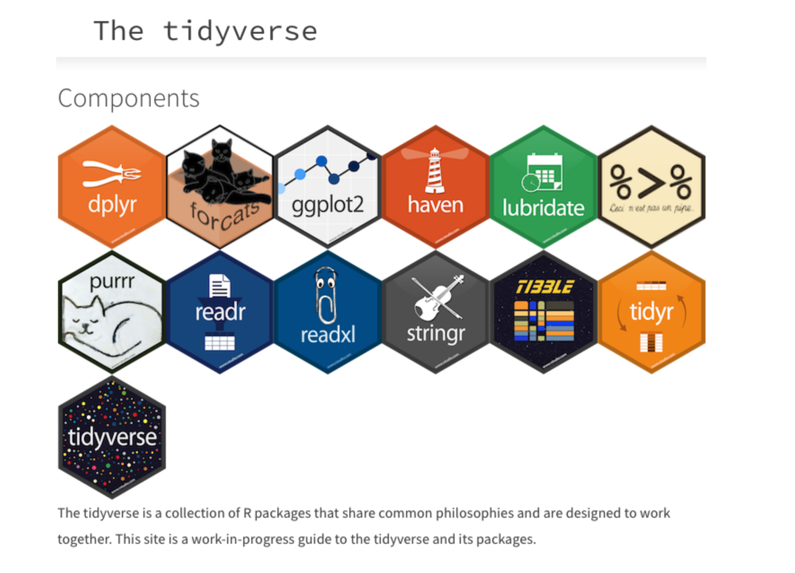
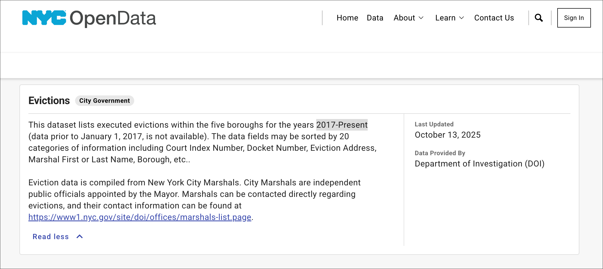
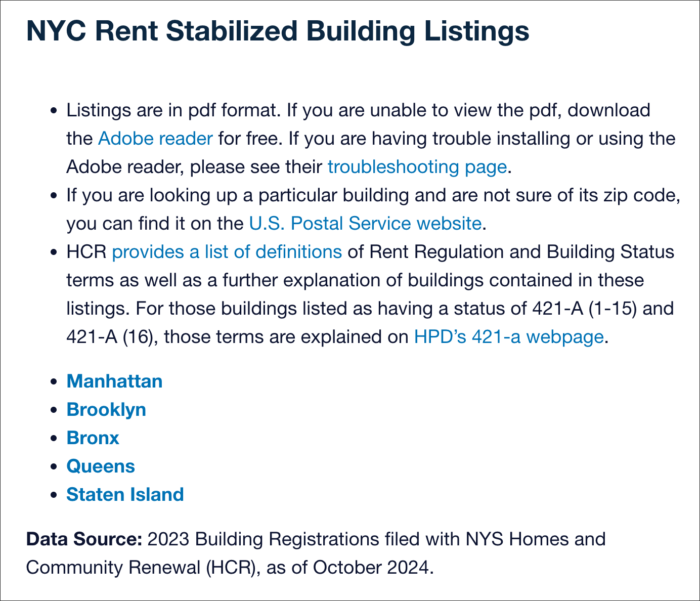
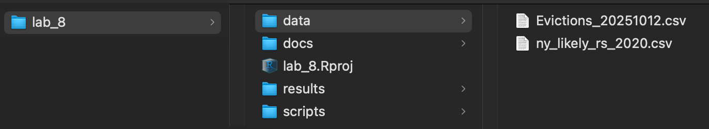

Class 8 Lab: NYC Evictions & Rent Stablized Units - Tidyverse Experiments
Fall 2025 | Instructor: Stephen Metts | PGUD 5160 - CRN 2247
Preamble
In this eighth demonstration lab, we will continue to repeat the project setup phase of previous weeks (setting the working directory to lab_8) then move along to working with the tidyverse package for both eviction and rent stabilization data for NYC. This lab can and should be used in conjunction with this week’s assignment 8 deliverable - Assignment 8.
This lab walks through a compact set of tidyverse workflows to explore NYC evictions and rent‑stabilized (RS) parcels:
Data
In this week’s lab, we will work with data that has previously been downloaded in the case of evictions; for rent stabilized determinations, we will work with a spatial dataset tied to the MapPluto tax lots.
To start, we will utilize NYC Eviction Data from the OpenNYC platform. This data features executed (completed) evictions 2017-Present.
Second, we will use a pre-formed shapefile which is a subset of MapPLUTO parcels that fit a relatively recent listing of ‘likely’ rent stabilized properties.
With these two data resources, we will first organize them within R with a series of helpers that standardize how we will work with the data. The primary package will be tidyverse, and we will call in various libraries that come integrated that make up the core of the tidyverse universe.

This lab comes will important, significant caveats:
- NYC Eviction data is well mantained and comprehensive, dating back to 2017. But that does not mean that there are not issues with its development with over 100,000 evictions in the data set. Some evictions are missing (NA) data, and some are tied to either bogus or non-existent identifiers that can be matched to MapPLUTO and/or a buildings layer. And there are likely duplicate evictions entered to the data set.

- Like many seemingly important aspects of urban life, particularly NYC, their importance does not in any way guarantee easy, accessible data. This is certainly the case for the designation ‘Rent Stablized’:
Rent stabilization is a form of rent regulation that limits how much a landlord can increase rent each year and gives tenants the right to renew their leases. This system provides tenants with additional protections, such as the right to receive required services and not be evicted except for legal reasons. The maximum rent increase is determined by a local board, such as the Rent Guidelines Board in New York City.
Part of the issue is the organization of buildings vs MapPLUTO parcels. Several issues are at play:
A residential building can either be owned outright by one entity with no other parties; it can be a co-op; it can be a condo; and it can also be a condop - hybrid of co-op and condo ownership. Each of these features a BBL reference differently.
All buildings regardless of their structure feature a BIN number. However, information about what is taking place within the building may be hard to gather - particularly tracking down rent stablized units therein.
There is indeed an agency that is tasked with a myriad of aspects of rent stabilization, and indeed they publish data - this is the Rent Guidelines Board. However, like many agencies despite prompting by the open source and data science worlds, have refused to publish their data in a machine-readable format. Here’s the defense:
The rent-stabilized list is still in PDF format because it is a large, static dataset that is time-consuming and resource-intensive to update into a dynamic, searchable database for public use. Maintaining the list requires significant effort due to changes in the “Statewide Housing Security and Tenant Protection Act of 2019” and other ongoing updates to rent laws, so the most practical method of distribution has been PDFs for the time being.
This is a bad defense; and for our mapping this week, we are going to avoid PDFs entirely. Certainly we can/could parse these via R - the pdftools pacakge does this. Instead, we are going to rely on a a former New School student who developed an app for tracking rent stabilized buildings. We are going to use his Chris Henrick 2020 list as a proxy for properties - not specific buildings - that are ‘likely’ feature either a unit or many units, many buildings that are deemed rent stabilized.

For lab_8, we will download a prepared data directory that has all necessary data for both this week’s lab as well as assignment:
This data subdirectory will be in .zip format; make sure to uncompress the directory before engaging it with this week’s lab script. Further, change the name from lab_8_data-subdirectory to simply data and place it into your lab_8 directory.
Step 1: Project Management in RStudio for lab_8 (also applicable for assignment_8)
As we have done for previous labs, we will create a lab_8 project directory:

A well-organized folder structure within an RStudio project is crucial. Common conventions include:
data/: For raw data (treated as read-only).
docs/: For documentation or R Markdown files.
results/: For outputs and generated results.
scripts/: For R scripts and analysis pipelines.
Step 2:
With the lab_8.Rproj established and the subdirectories for our data analyses established, we can print both the working directory and all the paths and files therein:
Your ‘upstream’ path will likely be different than Users/x15… if you are using macOS, your full path would be akin to /Users/your_machine_name/Desktop/lab_8. On macOS, this can also be expressed as ~/Desktop/lab_8:
The tilde ~ is a special character that acts as a shortcut for the current user’s home directory.
This is fine; we want to simply make sure that the directory we created - lab_8 is indeed the directory in which and from which we are and will be working.
Step 3:
For this week’s lab, utilize the following script in conjunction with the previous data subdirectory download.
Class 8 Tidyverse Experiments lab script
Open the script from the scripts subdirectory: File>Open File>lab_7>scripts>c8_lab8-script-1.R
To start, tidyverse and gt packages we’ve installed in past labs and assignments are called. The other packages are part of the tidyverse universe and they download with the larger package; we just call them explicitly here also”
Next, set paths for both the evictions and rent stablized data:
ev_path <- "~/Desktop/lab_8/data/Evictions_20251012.csv" # Evictions Data Path
rs_path <- "~/Desktop/lab_8/data/ny_likely_rs_2020.csv" # Rent Stabilized Data PathTo follow, we create two new tibble data frame objects named ev and rs; note that we are using the mutate() function address formatting issues across both tibbles.
Before running the experiments, we need a series of helpers that target the join behavior and deal with setting the gt table results. Since these helpers are used across multiple experiments, we just set these up prior to any experiments and how them in temporary memory for our work session.
EXPERIMENT 1 — Weekly evictions (last 52 weeks)
In this first experiment, we want to see a trend analysis over the last 52 weeks of eviction events. Here we are not paying attention to any eviction details; we just want a total number of evictions at given periods, and then compare those periods to understand the fequency trend in the last year of eviction activity.
In creating the subset tibble ev_weekly_last_year we:
filter(executed_date >= start, executed_date <= anchor)mutate(week = floor_date(executed_date, "week", week_start = 1))count(week, name = "evictions")complete(week = seq(min(week), max(week), by = "1 week")arrange(week)
We then plot this tibble using the geom_line() format:
geom_line()connects data points with lines, typically ordered by a variable on the x-axis, making it suitable for visualizing trends over time or relationships between ordered variables.
EXPERIMENT 2 — Weekly evictions by BOROUGH (last 52 weeks)
To follow, we create a new tibble data frame object ev_weekly_boro, with several new functions:
count(BOROUGH, week, name = "evictions")group_by(BOROUGH)ungroup()arrange(BOROUGH, week)
We then plot this tibble using the geom_line() format, but this time with each grouped BOROUGH adopting its own geom_line().
EXPERIMENT 3 — Latest 12 weeks (sorted table)
In this experiment, we create a new object ev_weekly_last_12 from the tibble object in experiment 1 ev_weekly_last_year. To do this subset, we use two functions:
slice_tail(n = 12)arrange(desc(evictions))
We then send this result to gt library to create a table view of the last 12 weeks of evictions data. In the gt table, we use the following to mutate() argument to aggregate evictions on a per week basis:
mutate(week = as.Date(week), evictions = number(evictions, accuracy = 1))
EXPERIMENT 5 — EDA — RS Parcels: Buildings by Year Built (YEARBLT), yearly bar
In this experiment, we want to know the concentration of building vintage; we want to know if there is an era of building activity that produced or at least now houses the rent stablized units. Keep in mind we are still working at the BBL level which is a parcel identifier - we are not acutally working with particular, unique buildings via the BIN identifier.
To start, we run a couple helpers then create the rs_yearly tibbbl data frame with these functions and arguments:
mutate(year_built = suppressWarnings(as.integer(yearbuilt)))filter(!is.na(year_built),dplyr::between(year_built, year_limit_min, year_limit_max))count(year_built, name = "buildings")complete(year_built = seq(min(year_built),max(year_built), by = 1),fill = list(buildings = 0)
Next, we use the geom_col() format to show in bar chart format the concentrations and spread of rs buildings (parcels) per decade:
geom_col() is a function within the ggplot2 package in R, used for creating column charts (or bar charts where the height represents a value from the data). It is distinct from geom_bar(), which counts the number of cases in each group by default.
EXPERIMENT 6 — Event-level join: evictions to RS by BBL
Next we turn to a critcal join operation. Althought its just several lines of code, its arguably the most important step for the remaining experiments. Here we want to join on a shared identifier in both the rs and evictions data.
While we have the BIN in the evictions data, we don’t have it in the rs data. So we revert to the parcel BBL identifier. We create a one-row-per-BBL key from rs data set; then perform an inner join (dropping events whose BBL isn’t in rs_key). The result is rs parcels where at least one eviction event has matched.
Evictions (EV): 117,286 records across 43,131 unique BBLs (≈ 2.72 events/BBL on average).
Rent-stabilized (RS): 60,856 unique BBLs.
Join (
rs_ev) via INNER JOIN: 62,245 records → these are the EV rows whose BBLs exist in RS (match rate ≈ 53.1% of all EV rows).Because 62,245 > 60,856, many RS BBLs have multiple EV events—that’s why we see BBLs repeating in
rs_ev.
What “repeating BBLs” signify:
A repeated BBL in rs_ev means multiple eviction events attached to the same property (e.g., different dates/tenants/cases).
Repeats can also include true duplicates if the EV data have duplicated records; that’s why we create a de-duping trusted event key before interpreting “repeat activity.”
The code is as follows:
rs_key <- make_rs_key(rs)
rs_ev <- join_rs_events(ev, rs_key)
EXPERIMENT 7 — Borough rates: events per 1,000 RS units + % of RS units
In this experiment, we aggregate our eviction events in rent stabilized buildings to the borough level to compare across the boroughs. We create a new tibble data frame rs_units_upper via the previous rs_key
rs_units_upper <- rs_units_by_borough(rs_key)
We then run mutate() and count() functions, creating the rs_ev_boro aggregation:
mutate(BOROUGH = dplyr::coalesce(BOROUGH, borough_from_bbl(bbl)))count(BOROUGH, name = "evictions_at_rs")
Finally, we create a rs_rates tibble data frame by left_join the rs_units_upper using mutate() and arrange() to get our rates that are then passed along to the gt plot.
EXPERIMENT 8 — Top RS owners by eviction event count
To start, we create custom function to clean up the odd characters and spaces that will likely be present in our owners name column. Next, we create a new tibble data frame top_owners filtering out any that are NA, then count and sort the results and limit the results to just the top 15 with the slice_head() function. We will follow this with a gt table.
EXPERIMENT 9 — RS buildings with most eviction events
In this version, we replicate the pattern of experiment 8 to capture not owners but the buildings (actually parcels based on the BBL). Here we create a tibble data frame object top_bbls and pass along to a final gt table.
EXPERIMENT 10 — Weekly eviction events at RS buildings (last 52 weeks)
In this experiment, we subset the eviction events to just those in the rs buildings, and then pass the resulting tibble data frame object ev_weekly_rs to ggplot. Note that in the result, we will see the same pattern as EXPERIMENT 1 — Weekly evictions (last 52 weeks), but the weekly evictions on the y axis are smaller in number because we are only considering those evictions in rs buildings, not all evictions.
Concluding Remarks
In this eighth demonstration lab, we utilized core features from the tidyverse package to produce new insights first about each data set - evictions then rent stabilized buildings - then about the concurrence of both via the join process. Each of these experiments can be used further in assignment 8; just keep in mind we are largely looking at the last 52 weeks of the data. In the assignment 8, we don’t necessarily subset to just the past year; we take into consideration all evictions dating back to 2017. If you do use work from this lab, avoid the ‘52 week’ subsets so that you can incorporate work that takes into consideration all eviction data dating back to 2017. The following experiments use the ‘52 week’ subset:
- EXPERIMENT 1 — Weekly evictions (last 52 weeks)
- EXPERIMENT 2 — Weekly evictions by BOROUGH (last 52 weeks)
- EXPERIMENT 3 — Latest 12 weeks (sorted table)
- EXPERIMENT 10 — Weekly eviction events at RS buildings (last 52 weeks)
Assignment 8 Link:
Scripts & Lab Data:
Class 8 Lab 8 R Script #1 - open in your RStudio
scriptsFile>Open File>lab_8>scripts>c8_lab8-script-1.R
References:
- Eviction Lab - NYC
- Likely Rent Stablized Data Set
- NYC OpenData Eviction Data
- HPD Open Data and Metrics
- HPD New York City Housing and Vacancy Survey (NYCHVS)
- NYC City Council Evictions Data Page
- ANHD Displacement Alert Project (DAP)
- DAP Portal
- Just Fix - Technology for Housing Justice
- DOB Safety Violations
- NYU Furman Center’s Subsidized Housing Database
- HPD Speculation Watch List
- DOB ECB Violations
- NYC Citywide Rolling Calendar Sales
- Housing Maintenance Code Complaints and Problems
- HPD Housing Maintenance Code Violations
- DOB Violations